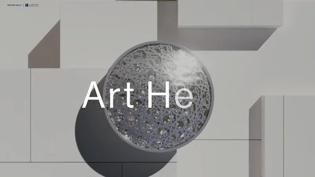
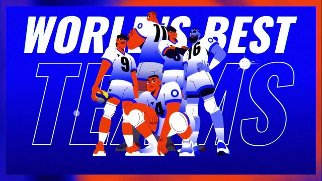
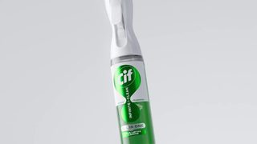

点封面在页面里播放（Vimeo / YouTube / X 需要代理；Vimeo 若没自动开始，再点一下播放键）。觉得好就点「喜欢」，有想法就写在下面的框里保存，我每天出日报前会读，存进偏好和审美库；会多找同类，但每天仍保持类型分散。
目录
- 01How to effectively use visuals in your presentation
- 02morphing popover menu
- 03Mathias Adolfsson ’26：Curved Carousel + Barrel Gallery
- 04Snow globe surprise（Shop gift discovery）
- 05Animated icons（Animations / Component Design）
- 06Shopify Editions：Figma motion → code
- 07Hervé studio case clips
- 08Scroll-Based Layout Animations（update）
- 09Cycle micro-agency reel
- 10Volleyball World – VNL Trailer
- －看完剔除（9 条）
- 拆细拆：TED-Ed 演示视觉三板斧
01知识讲解MG字体版式
How to effectively use visuals in your presentation
TED-Ed · 2026-11-05 【看过视频】（完整看过）
 YouTube
YouTube全片约 298 秒已下载并用看片工具完整看过；今天的细拆
主色深紫 #22134E，强调霓虹粉/青/绿；字体未识别
好在哪约 5 分钟：深紫底霓虹线稿讲「演示视觉三件事」。开场几何变形钩子，中段把 2D 对话框翻成 3D 地板、图标从地板里冒出来；后段把一页烂幻灯片拆成三块、文字缩成横线再捏成图标。字体未识别（接近 Montserrat / Proxima Nova）
可借科普口播里别一上来堆图标：先画一条「思路线」当字幕框，再把板子翻成地板让要点立起来。细拆见文末
02代码动画UI动效
morphing popover menu
jhey（@jh3yy） · X 2026-11-05 【看过画面（抽帧）】
25 秒已下载，抽帧看过
界面字未识别；标注是手写风
好在哪约 25 秒：三点按钮弹成菜单再胀成卡片，同一容器在变形。拖到边缘时用 @container anchored(fallback) 换位；分层爆炸图拆开 menu / 毛玻璃 / 内容生长 / 固定外框。深色网格 + 手写标注，克制
可借做设置菜单或「更多」：外框尺寸别跟着内容抖，内容从锚点那一格长出来；贴边就换 fallback 方位，别让菜单出屏
03代码动画转场UI动效3D质感
Mathias Adolfsson ’26：Curved Carousel + Barrel Gallery
Mathias Adolfsson（Codrops） · 2026-11-05 【看过画面（抽帧）】
Codrops ↗Codrops 演示 mp4 已拼接下载，抽帧看过；站点内嵌播放，页面用封面外链
字体未识别（几何无衬线）
好在哪Codrops 演示合集：黑底上作品卡弯成筒形画廊，点开再展开成电商 kit / 珠宝网格。畸变有纵深，北欧电商气质干净，不像粒子炫技
可借竖屏作品集或工具合集：列表别平铺，用轻微筒形/圆弧排布；点进详情时卡片「打开」成网格，比淡入整页更有空间感
04UI动效转场
Snow globe surprise（Shop gift discovery）
60fps · X 2026-11-05 【看过画面（抽帧）】
9 秒已下载，抽帧看过
界面字未识别
好在哪约 9 秒礼品发现 App：错落 masonry 卡片、浮层胶囊筛「Surprise me / For me」、紫购物车 CTA。软阴影立体感克制，像已赞的 Plasma / Atlas 开卡引导
可借竖屏「给你挑一个」：先让筛选胶囊浮在网格上，点选时卡片轻轻让位，别整页刷新
05UI动效代码动画
Animated icons（Animations / Component Design）
Emil Kowalski · X 2026-11-05 【看过画面（抽帧）】
29 秒已下载，抽帧看过
卡片标题字未识别（几何无衬线）
好在哪约 29 秒深色圆角卡：霓虹青 easing 曲线图标 +「Animations」文案，另一张拼合组件带扫描线。图标动得短、停得稳，商业感强（帖文提了 AI 辅助，看的是成片质感）
可借功能介绍卡：标题旁放一个 1 秒内播完的微图标（曲线、拼合），循环时中间留停顿，别一直抖
06代码动画UI动效
Shopify Editions：Figma motion → code
jhey（@jh3yy） · X 2026-11-05 【看过画面（抽帧）】
11 秒已下载，抽帧看过
界面字未识别
好在哪约 11 秒：左 Figma 时间轴对右 HTML/CSS @keyframes（scale 0.17→1 + cubic-bezier），手机屏电商 hero。设计到代码的交接一眼能看懂
可借自己做 Remotion 前：先在设计工具里把曲线定死，再写成同一段 easing；左右分屏对照能当团队里的「运动说明书」
07MG3D质感字体版式
Hervé studio case clips
Hervé Studio（Codrops） · 2026-11-02 【看过画面（抽帧）】

Codrops ↗Codrops 演示 clip 已下载，抽帧看过；页面封面外链
标题字未识别（衬线 + 无衬线混排）
好在哪工作室片拼接：卢浮宫阿布扎比式白盒子展厅里排字、深棕几何标志轻轻转。光影干净，偏商业精致，不堆粒子
可借品牌或系列片头：先给一个有体积的「展厅空镜」，字落在建筑面上再出场，比黑底弹标题更有空间
08转场代码动画UI动效
Scroll-Based Layout Animations（update）
Codrops · X 2026-10-31 【看过画面（抽帧）】
12 秒已下载，抽帧看过
Demo 字未识别
好在哪约 12 秒：黑底竖卡相册在滚动时用 GSAP Flip 重排成行/网格/堆叠/bento。卡片重叠错位有节奏，更新版修了效果并加新布局
可借合集页或「本期目录」：滚动时别只淡入，让卡片从错落堆叠翻到整齐网格，观众更清楚「收拢 / 展开」
093D质感转场字体版式
Cycle micro-agency reel
Spline 社区（@splinetool 转发） · X 2026-11-05 【看过画面（抽帧）】
21 秒已下载，抽帧看过
字标未识别
好在哪约 21 秒机构站预告：桶形畸变城堡院景 +「Reinvention cycle」字标 + 01/05 进度条。网页 3D 场景干净，不靠霓虹粒子
可借系列片头：场景轻微桶形透视 + 角落进度「01/05」，比单纯数字角标更像「走进一季内容」
10MG片头片尾字体版式
Volleyball World – VNL Trailer
Musclebeaver · 2026-11-05 【看过画面（抽帧）】

motionographer.com已下载，抽帧看过
VNL 字标为赛事官方体；其余未识别
好在哪高对比矢量体育预告：对角切开画面、夸张透视扣球/垫球、国旗网格、白描边断裂画框。节奏猛但图形清楚
可借赛事或系列预告：用一条对角分割两景别，前景放大手部动作、后景放信息网格，比来回硬切更有冲击
看完剔除（9 条）

LOLA MullenLowe / Infinite & Invisible · 产品雾气和景深杂物偏满，今天让位给更可偷的 UI/代码片
Jules Guérin · 叙事混合媒介，难直接偷到口播/UI
Nikita Didenko · 隧道追车实拍动作戏，不符合主方向
Kurzgesagt – In a Nutshell · MG 标准参考，但上传约 2026-09-26，略超 30 天优先窗口；作备选
Apple · yt-dlp bot/429 下不下来；且偏实拍故事
今日细拆 · 第 1 条
5 分钟，把「幻灯片怎么帮口播」画成能复用的组件 【看过视频】（完整看过），时间点是大约值
TED-Ed 新片讲演示视觉。周五知识讲解档。整段是深紫底霓虹线稿：开场几何钩子，中段三块板（Revelation / Explanatory Power / Aesthetic Appeal）用推镜切换，穿插两段真实 TED 现场。做 Remotion 讲解时，最值得偷的是「对话框翻成地板」和「烂页拆成图标」两段
画面长什么样
- 底色几乎一直是深紫 / 海军蓝（约 #22134E），信息全靠霓虹描边发光
- 强调色：品红 #FF0077、青 #00E5FF、荧光绿 #00FF44、黄 #FFEA00；字大多纯白
- 字体未识别：粗无衬线，接近 Montserrat / Proxima Nova / Helvetica Neue
- 立体感不靠真 3D 模型：霓虹外发光 + 把 2D 面 rotateX 成地板 + 偶尔块状投影
结构与节奏（完整看片记下的大约秒数）
- 0–5 秒：白底 Thoreau 语录静帧，冷开场
- 5–34 秒：魔杖点红点 → 圆圈扩散 → 粉底聚合 → 眼睛/快门爆发；几何变形钩子，约每 2–4 秒换一态
- 34–45 秒：地铁线路画成对话框，再翻成 3D 地板，8 个霓虹图标从地板冒出（略满，像模板清单，但翻转本身可偷）
- 45–82 秒：红点=讲者、粉点=听众的顶视图；幻灯片一出现，听众点转向板子——一眼看懂「抢戏」
- 82–123 秒：三块霓虹板标题落下；推进第一块 Revelation；星座线画出「难形容的东西」
- 约 100–115 秒：切 Edith Widder 现场 + 大王乌贼实拍，节奏放慢透气
- 123–161 秒：第二块 Explanatory Power；图标合成半透明脑；乱板示意认知过载
- 161–221 秒：柱状图高亮 Feb/Oct；一页长文幻灯片拆成三块，字缩成线再捏成图标；坏段落被短标题「HOW BLACK IS A BLACK HOLE?」瞬间替换
- 221–263 秒：第三块 Aesthetic Appeal；块影山景；Hans Rosling 片段；乱字被整齐图标列推走
- 263–298 秒：回路线拼出 THROUGHLINE，笑脸点绕回听众阵；彩色点环无限放大擦出片尾
转场怎么接
- 圆形扩张擦除（红瞳孔、蓝圈）当硬切的软版
- 同一红点一路匹配：想法 → 瞳孔 → 讲者 → 句号
- 推镜进三块板：父级 scale/translate，子板当章节地图
- 2D 面对 X 轴旋转成地板，再让图标沿 Y 冒出来
Remotion / 代码里怎么做
- 霓虹描边：SVG path + stroke-dashoffset 画出，再叠一层 filter: drop-shadow
- 地板弹出：父容器 perspective + rotateX(60°–70°)，子图标从 y 正值弹到 0 并淡入
- 听众环：8 个点绕中心，用 props 控制朝向角（看向讲者或看向幻灯片）
- 简化蒙太奇：长文本块 → 宽度动画收成横线 → 再 morph 成简单 SVG 图标，总时长约 10–13 秒
- 章节地图：三个板放在同一大画布，用相机式 scale 推进某一块，退出时再拉远
放到 AI 科普里怎么用
横屏口播讲概念时：先用「红点+听众环」演示注意力被示意图抢走，再切你的正解图。竖屏功能介绍：用「一页字 → 三块 → 图标」把复杂说明压成三个符号，口播只念短标题。一集里三块板推镜只用一次当大纲，别每段都霓虹闪。
看原片 ↗